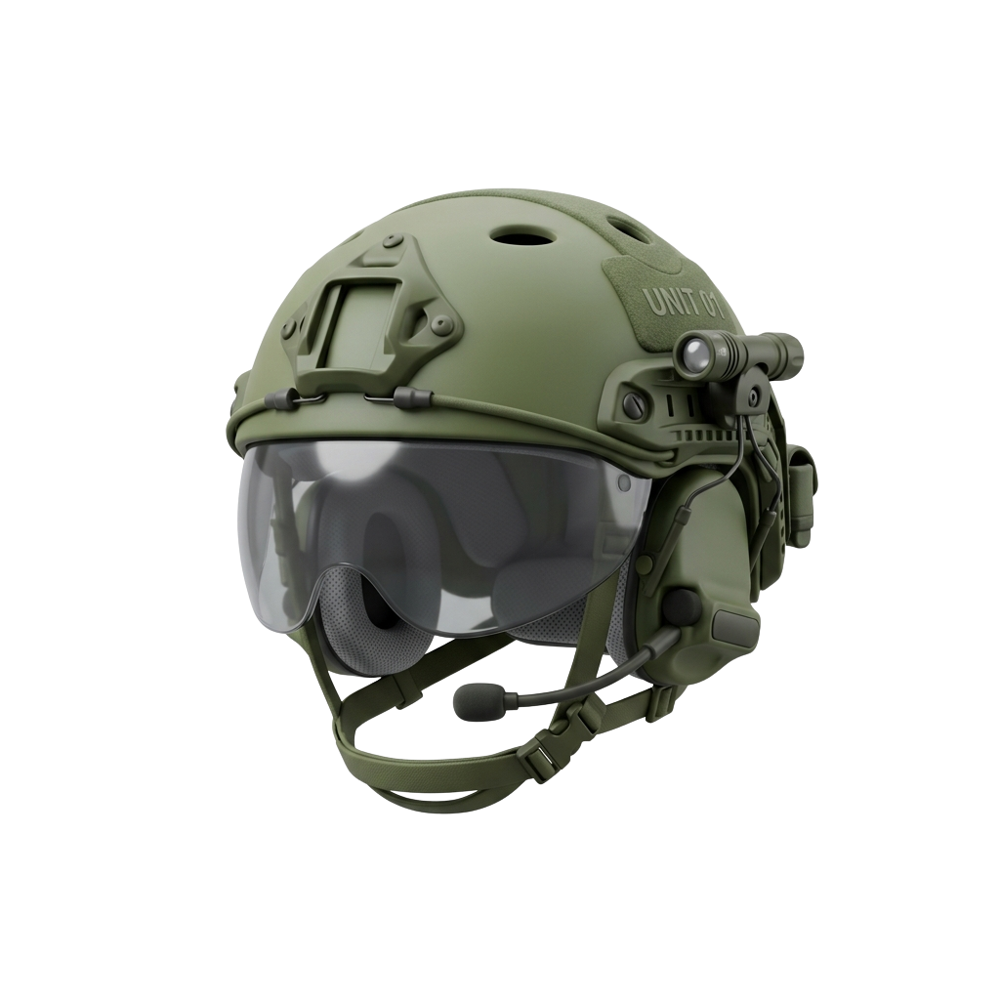
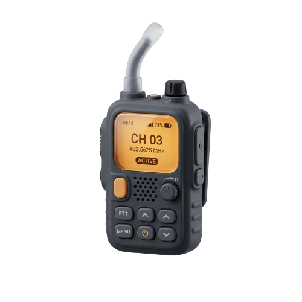
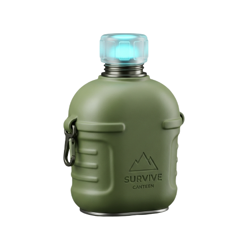

STAY TACTICAL
Equip. Survive. Adapt.

Combat Ready
Premium tactical equipment designed for ultimate performance and durability. Stay ready for any mission.

Stay Connected
Advanced communication and reconnaissance tools. Keep your situational awareness at its peak.

Survival Instinct
Essential survival gear for challenging environments. Built tough for those who operate in the shadows.